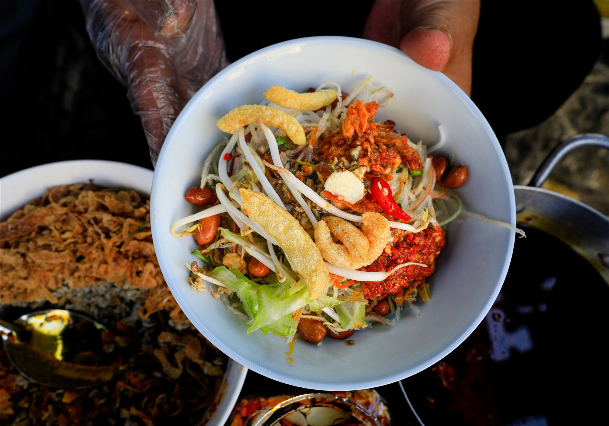

🍚Cơm hến
💁🏻♀️ Giới thiệu
Cơm hến là món ăn dân dã gắn liền với vùng Cồn Hến (phường Vỹ Dạ). Sức hút nằm ở sự hòa quyện giữa các hương vị đối lập: nóng - lạnh, giòn - mềm, cay - bùi - mặn.
🥣 Nguyên liệu chính
• Hến xào, nước luộc hến
• Cơm trắng để nguội
• Tóp mỡ, lạc rang, da lợn chiên
• Rau sống: bắp chuối, rau thơm, thân chuối non
🧑🍳 Cách chế biến
• Hến xào nhanh cho săn lại
• Nước hến giữ nóng, thêm mắm ruốc và gừng
💭 Mách nhỏ cho bạn
👉🏻 Trộn đều rồi chan nước hến nóng để món ăn thêm đậm đà